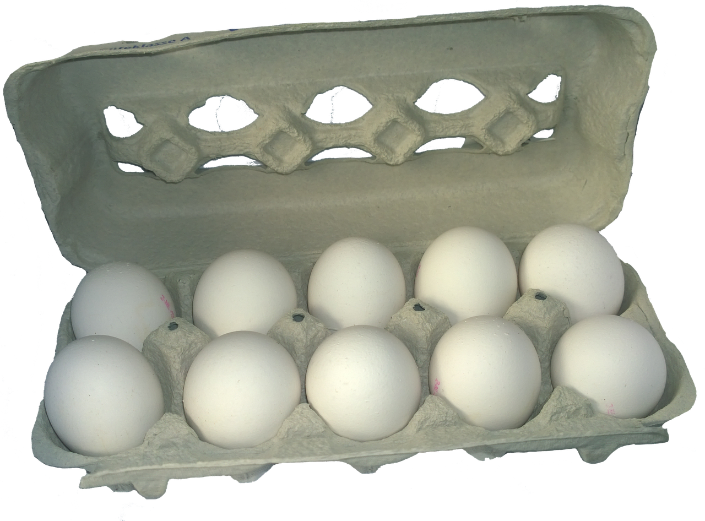
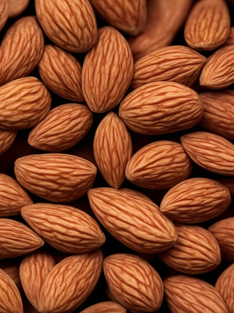
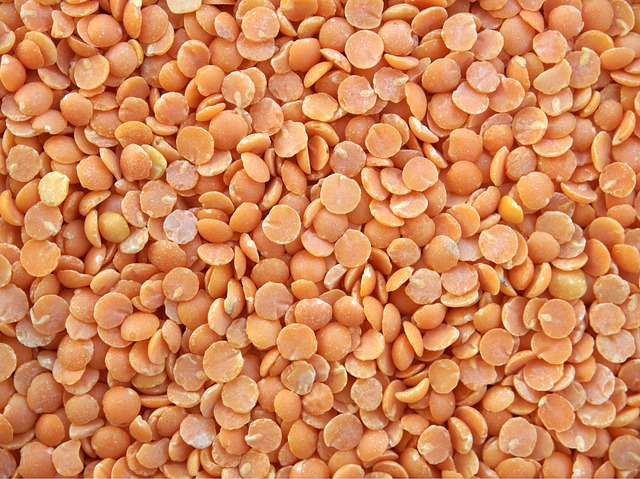
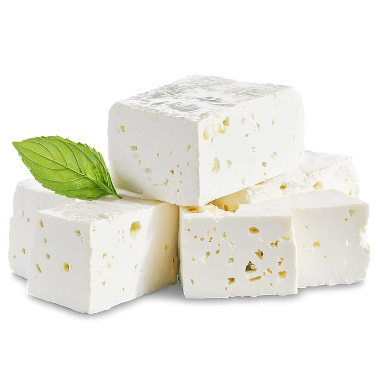

   
Proteins are an important part of our nutrition.
See the so called Healthy Eating Pyramid of Harvard School of Nutrition Health
and the Healthy Eating Plate of Harvard School of Nutrition Health
according to which vegetables and fruits should be 1/2 of the plate, whole grains 1/4 of the plate and protein power also 1/4 of the plate. But what is healthy protein power?
click on the products that you think contain a lot of protein